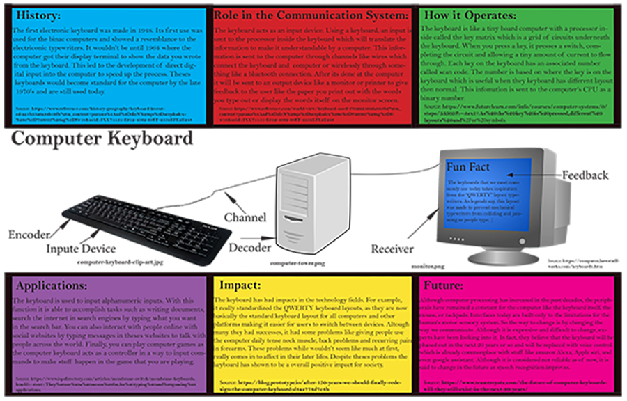

Infograpic ProjectThe Keyboard | |
|  | |
|
The Infograpic project required me to go online and research my given infograpic in this case the keyboard and talk about in 6 catagories about its history, role in the communication system, how it operates, applications, impact, and future. With useful sites like explainthatstuff.com and Adobe Indesign, I was able to construct my project. To sum it up, the way the keyboard works is that when you press keys on the it it sends a signal to the cpu inside the keyboard to which goes to the main computer's cpu which will send to display it on a monitor as shown in the image above. | |
|
Digital photos -- Bookmark -- Home | |
|
©2023 Shawn P. Gray | |